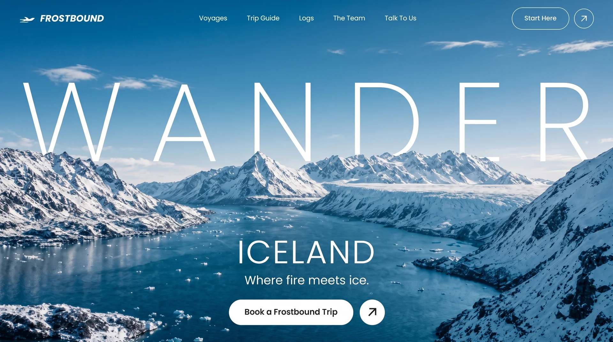

Frostbound
Traveltravelyilai-ai 公开页面
收录时间：2026-09-07正文：23,449 字符

本地预览图 · webp
完整提示词
Build ONE file and name it exactly: index.html
FILE OUTPUT RULE (strict):
- Create a single file named `index.html` — that exact filename, lowercase, nothing else.
- Do NOT create hero.html, frostbound.html, style.css, script.js, README.md, or any
other file. No folders, no assets directory, no build config.
- Everything lives inside index.html: all CSS in one <style> in <head>, all JS in one
<script> immediately before </body>. No frameworks, no libraries, no build step.
- If a file named index.html already exists, overwrite it.
The file contains ONE full-viewport hero section for a travel brand called FROSTBOUND.
Reproduce it exactly to the spec below.
=================================================================
!! COMMON FAILURE MODES — READ FIRST, DO NOT REPRODUCE THESE !!
=================================================================
1. THE NAVBAR CIRCLE BUTTON MUST BE A PERFECT CIRCLE, not a wide ellipse.
Its size comes from a CSS custom property `--cta-h`, and that property must be
DEFINED TWICE — once on `.hero__actions` and once on `.nav__cta` — because each
has its own pill to match. If you define it in only one place, the other scope
resolves `var(--cta-h)` to nothing, `width`/`height` become invalid and fall back
to `auto`, the button stretches across its flex line into a giant ellipse, and the
arrow inside it blows up to several times its intended size. Both definitions are
given verbatim below. Do not merge, move, or omit either one.
2. The brand mark is a side-view aeroplane taking off with two speed lines, NOT a
chevron, mountain, or triangle. Use the literal SVG markup given below verbatim.
3. Icons inside circular buttons are 62% of the button, not larger.
=================================================================
ASSETS (use these URLs verbatim — both are images, not video)
=================================================================
Background image:
https://images.higgs.ai/?default=1&output=webp&url=https%3A%2F%2Fd8j0ntlcm91z4.cloudfront.net%2Fuser_38xzZboKViGWJOttwIXH07lWA1P%2Fhf_20260831_223525_e839e252-1c53-4160-87ff-94e9ebd14e6d.png&w=1920&q=85
Foreground image (same photograph, 2688x1520, used as the overlapping layer):
https://soft-zoom-63098134.figma.site/_assets/v11/7b4f989decc56bc0188c28c4a7898c8659d0877c.png
Font (Google Fonts, <link> with preconnect to fonts.googleapis.com and fonts.gstatic.com):
https://fonts.googleapis.com/css2?family=Poppins:ital,wght@0,200;0,300;0,400;0,500;0,600;1,500;1,600&display=swap
Body font-family: "Poppins", "Helvetica Neue", Arial, sans-serif
=================================================================
THE CORE VISUAL IDEA
=================================================================
A snow-covered Icelandic fjord fills the screen. The word WANDER is set enormous
and ultra-thin across the upper-middle, and the mountain ridge line CUTS THROUGH
the bottom of the letters — the headline sits BEHIND the mountains but IN FRONT of
the sky. This is achieved by painting the same photo twice: once as the background,
once as a foreground layer stacked above the headline. Because both <img> elements
use identical framing (inset:0, width:100%, height:100%, object-fit:cover,
object-position:center bottom), they align pixel-for-pixel at every viewport size and
read as one continuous photograph with the text sandwiched inside it.
Z-index stack inside the hero (which has `isolation: isolate`):
1 = background photo
2 = WANDER headline
3 = foreground photo (identical framing to layer 1)
5 = bottom UI block (ICELAND / tagline / CTA)
7 = mobile overlay menu
8 = navbar (stays above the overlay so the logo and close button remain visible)
=================================================================
GLOBAL CSS
=================================================================
:root {
--ink: #0d1b24;
--white: #ffffff;
--pad-x: clamp(18px, 3.2vw, 56px); /* the single horizontal rhythm for the page */
}
html, body { height: 100%; }
body { font-family: Poppins stack; background: #9fc3d4; color: var(--white);
-webkit-font-smoothing: antialiased; }
.hero {
position: relative; width: 100%;
height: 100vh; height: 100svh; /* svh second, so mobile URL bars don't clip it */
min-height: 560px; overflow: hidden; isolation: isolate;
}
=================================================================
LAYER 1 + LAYER 3 — THE TWO PHOTOS
=================================================================
.hero__bg and .hero__fg are BOTH:
position: absolute; inset: 0; width: 100%; height: 100%;
object-fit: cover; object-position: center bottom;
.hero__bg { z-index: 1; }
.hero__fg { z-index: 3; pointer-events: none; }
Bottom anchoring on BOTH is mandatory — center anchoring makes the two copies drift
apart on wide screens and produces a visible double-ridge seam.
.hero__bg alt="Snow draped Icelandic fjord"; .hero__fg alt="" aria-hidden="true".
=================================================================
LAYER 2 — THE GIANT HEADLINE
=================================================================
Markup: <h1 class="hero__title" aria-label="Wander"> with SIX separate spans, one per
letter, each carrying an index custom property used by the load animation:
<span style="--i:0">W</span><span style="--i:1">A</span><span style="--i:2">N</span>
<span style="--i:3">D</span><span style="--i:4">E</span><span style="--i:5">R</span>
.hero__title {
position: absolute; z-index: 2; top: 23%; left: 0; right: 0;
padding: 0 var(--pad-x);
display: flex; justify-content: space-between; align-items: flex-start;
font-weight: 200;
font-size: min(clamp(3rem, 18.5vw, 18rem), 33vh);
line-height: 0.82; color: #fff;
user-select: none; pointer-events: none;
}
.hero__title span { display: block; }
Why it is built this way (keep both mechanisms):
- flex + space-between makes the six letters span the exact full width between the
page padding at any viewport, instead of hand-tuned letter-spacing.
- The min(..., 33vh) cap keeps the word from swallowing short/wide laptop windows.
- 18.5vw (not more) is calibrated to WANDER's glyph widths — W, N and D are wide, and
a larger value pushes the R past the right padding edge on phones.
=================================================================
THE TWO SVG ICONS — USE THIS MARKUP VERBATIM
=================================================================
BRAND MARK (aeroplane taking off, with two speed lines beneath it).
Sits inside <a class="brand">, immediately before the word FROSTBOUND:
<svg viewBox="0 0 64 34" fill="none" xmlns="http://www.w3.org/2000/svg" aria-hidden="true">
<path d="M6 25.5h34.5c6.6 0 12.4-3.2 16.6-7.4 1.6-1.6 1-3.6-1.2-4.1-3.4-.8-7.1-.2-10.2 1.6l-6.4 3.7-14.6-9.5c-.7-.5-1.6-.6-2.4-.3l-3.6 1.3 8.1 8.1-8.3 2.1-4.6-3.2-2.6.9 3.3 5.1z" fill="currentColor"/>
<path d="M2 30.5h30" stroke="currentColor" stroke-width="2" stroke-linecap="round"/>
<path d="M14 20.5H1.5" stroke="currentColor" stroke-width="2" stroke-linecap="round"/>
</svg>
ARROW (45° up-right), used inside every circular button:
<svg viewBox="0 0 24 24" fill="none" xmlns="http://www.w3.org/2000/svg">
<path d="M7 17 17 7M8 7h9v9" stroke="currentColor" stroke-width="1.7"
stroke-linecap="round" stroke-linejoin="round"/>
</svg>
Use stroke-width 1.7 in the navbar's ghost circle and 1.9 in the solid CTA circle.
=================================================================
NAVBAR
=================================================================
.nav { position: absolute; z-index: 8; top:0; left:0; right:0;
display:flex; align-items:center; justify-content:space-between; gap:24px;
padding: clamp(16px,2vw,30px) var(--pad-x); }
Left — <a class="brand" href="#"> = the brand SVG above (width clamp(28px,2.6vw,44px);
height:auto; flex:none) followed by the text FROSTBOUND.
.brand { display:flex; align-items:center; gap:12px; font-style:italic;
font-weight:600; letter-spacing:.02em; font-size: clamp(1.05rem,1.5vw,1.65rem);
white-space:nowrap; text-decoration:none; color:#fff; }
Centre — <ul class="nav__links"> with five items, each <li style="--i:N"> for N 0..4:
Voyages | Trip Guide | Logs | The Team | Talk To Us
ul: display:flex; align-items:center; gap: clamp(18px,3.2vw,56px); list-style:none.
a: color #fff, font-weight 400, font-size clamp(.85rem,1.05vw,1.06rem),
white-space:nowrap, opacity .95, transition opacity .25s ease, hover opacity .65.
Right — <div class="nav__cta"> holding, in order:
1. <a class="pill--ghost" href="#">Start Here</a>
2. <a class="circle circle--ghost" href="#" aria-label="Start here"> + arrow SVG
3. <button class="burger" type="button" aria-label="Open menu" aria-expanded="false"
aria-controls="menu"><span></span><span></span><span></span></button>
/* FIRST of the two required --cta-h definitions. The nav circle must match the
height of the "Start Here" pill beside it: pill font-size x its 1.2 line-height,
plus both vertical paddings, plus 3px for the pill's two 1.5px borders. */
.nav__cta {
--cta-h: calc(
clamp(0.85rem, 1.05vw, 1.06rem) * 1.2
+ 2 * clamp(10px, 0.9vw, 15px)
+ 3px
);
display: flex;
align-items: center;
gap: 12px;
}
.pill--ghost { display:inline-flex; align-items:center; justify-content:center;
padding: clamp(10px,0.9vw,15px) clamp(20px,2vw,34px);
border: 1.5px solid rgba(255,255,255,.9); border-radius: 999px; color:#fff;
text-decoration:none; font-weight:500;
font-size: clamp(.85rem,1.05vw,1.06rem); white-space:nowrap;
transition: background .25s ease, color .25s ease; }
.pill--ghost:hover { background:#fff; color: var(--ink); }
.circle { display:inline-flex; align-items:center; justify-content:center;
width: clamp(44px,3.4vw,62px); height: clamp(44px,3.4vw,62px);
border-radius:50%; flex:none; text-decoration:none;
transition: transform .25s ease; }
.circle:hover { transform: rotate(45deg); } /* the arrow swings to point up */
.circle svg { width:62%; height:62%; }
.circle--ghost { border:1.5px solid rgba(255,255,255,.9); color:#fff; }
.circle--solid { background:#fff; color: var(--ink); }
/* Both circles then take the matched height of the pill they sit next to.
This rule REQUIRES --cta-h to exist in BOTH scopes — see failure mode 1. */
.hero__actions .circle,
.nav__cta .circle { width: var(--cta-h); height: var(--cta-h); }
=================================================================
BURGER — MORPHS INTO A CLOSE X
=================================================================
.burger { display:none; flex-direction:column; align-items:center;
justify-content:center; gap:5px;
width: clamp(44px,3.4vw,62px); height: clamp(44px,3.4vw,62px);
border: 1.5px solid rgba(255,255,255,.9); border-radius:50%;
background:transparent; cursor:pointer; padding:0; flex:none;
align-self:center; -webkit-tap-highlight-color: transparent; }
.burger span { display:block; width:18px; height:1.5px; background:#fff;
border-radius:2px;
transition: transform .5s cubic-bezier(.76,0,.24,1), opacity .25s ease .12s; }
/* 1.5px bar + 5px gap => exactly 6.5px between bar centres */
body.nav-open .burger span:nth-child(1){ transform: translateY(6.5px) rotate(45deg); }
body.nav-open .burger span:nth-child(2){ opacity:0; transform: scaleX(.3);
transition-delay: 0s; }
body.nav-open .burger span:nth-child(3){ transform: translateY(-6.5px) rotate(-45deg); }
Note the burger keeps the plain clamp() size — it is NOT sized by --cta-h, because it
is hidden at the widths where the ghost pill exists.
=================================================================
MOBILE OVERLAY MENU (the signature animation — build it exactly)
=================================================================
Markup, placed directly after </header>, inside .hero:
<div class="menu" id="menu" aria-hidden="true">
<ul class="menu__links">
<li style="--i:0"><a href="#">Voyages</a></li>
<li style="--i:1"><a href="#">Trip Guide</a></li>
<li style="--i:2"><a href="#">Logs</a></li>
<li style="--i:3"><a href="#">The Team</a></li>
<li style="--i:4"><a href="#">Talk To Us</a></li>
</ul>
<a class="pill--ghost menu__cta" href="#">Start Here</a>
</div>
.menu { position:absolute; inset:0; z-index:7;
display:flex; flex-direction:column; justify-content:center;
padding: clamp(88px,15vh,150px) var(--pad-x) clamp(28px,6vh,64px);
background: linear-gradient(180deg, rgba(10,34,48,.82) 0%, rgba(10,34,48,.68) 100%);
-webkit-backdrop-filter: blur(22px) saturate(130%);
backdrop-filter: blur(22px) saturate(130%);
overflow-y:auto; overscroll-behavior:contain;
clip-path: inset(0 0 100% 0); /* closed: masked to a zero-height sliver */
visibility: hidden;
transition: clip-path .75s cubic-bezier(.76,0,.24,1), visibility 0s linear .75s; }
body.nav-open .menu { clip-path: inset(0 0 0 0); visibility: visible;
transition: clip-path .75s cubic-bezier(.76,0,.24,1), visibility 0s linear 0s; }
The panel does NOT slide in as a block — it UNMASKS downward via clip-path while its
contents stay anchored in place. The visibility delay flips instantly on open and
waits out the full 750ms on close so the panel stays focusable-free when hidden.
.menu__links { list-style:none; }
.menu__links li { overflow:hidden; /* masks each line for the reveal */
border-bottom: 1px solid rgba(255,255,255,.16); }
.menu__links a { display:block; padding: clamp(12px,2.2vh,22px) 0; color:#fff;
text-decoration:none; font-weight:300;
font-size: clamp(1.6rem,8.5vw,2.75rem); letter-spacing:.01em;
transform: translateY(110%); opacity:0; /* starts hidden below its mask */
transition: transform .6s cubic-bezier(.22,1,.36,1), opacity .4s ease; }
body.nav-open .menu__links a { transform: translateY(0); opacity:1;
transition-delay: calc(.22s + var(--i) * .06s); } /* 60ms stagger down the list */
.menu__cta { align-self:flex-start; margin-top: clamp(22px,4vh,44px);
padding:15px 34px; font-size:1rem; transform: translateY(18px); opacity:0;
transition: transform .6s cubic-bezier(.22,1,.36,1), opacity .4s ease,
background .25s ease, color .25s ease; }
body.nav-open .menu__cta { transform: translateY(0); opacity:1; transition-delay:.5s; }
Closing reverses with NO delays, so dismissal feels instant while opening feels composed.
=================================================================
BOTTOM UI BLOCK
=================================================================
.hero__bottom { position:absolute; z-index:5; left:50%; transform:translateX(-50%);
bottom: clamp(28px,6vh,70px); width:100%; padding: 0 var(--pad-x);
display:flex; flex-direction:column; align-items:center; text-align:center;
gap: clamp(8px,1vh,14px); }
<h2 class="hero__place">ICELAND</h2>
font-weight:300; font-size: clamp(2.4rem,6.2vw,5.2rem); letter-spacing:.05em;
line-height:1; max-width:100%; white-space:normal; overflow-wrap:break-word;
<p class="hero__tagline">Where fire meets ice.</p>
font-weight:300; font-size: clamp(1rem,2.1vw,1.9rem); letter-spacing:.01em;
max-width:100%; white-space:normal; overflow-wrap:break-word;
<div class="hero__actions"> holds <a class="pill--solid">Book a Frostbound Trip</a>
and <a class="circle circle--solid" aria-label="Book a Frostbound trip"> + arrow SVG.
/* SECOND of the two required --cta-h definitions — the solid pill has no border,
so this formula has no +3px term. Both definitions must be present. */
.hero__actions {
--cta-h: calc(clamp(.95rem,1.3vw,1.35rem) * 1.2 + 2 * clamp(14px,1.3vw,22px));
display:flex; align-items:center; justify-content:center; flex-wrap:nowrap;
gap: clamp(10px,1vw,16px); margin-top: clamp(10px,2vh,22px);
width:auto; max-width:100%; }
.pill--solid { display:inline-flex; align-items:center; justify-content:center;
background:#fff; color: var(--ink); border-radius:999px;
padding: clamp(14px,1.3vw,22px) clamp(24px,2.6vw,44px);
font-weight:600; font-size: clamp(.95rem,1.3vw,1.35rem); line-height:1.2;
text-decoration:none; text-align:center; white-space:nowrap; flex:none;
transition: opacity .25s ease; }
.pill--solid:hover { opacity:.88; }
=================================================================
PAGE-LOAD STAGGER (runs once on first paint)
=================================================================
Animate opacity and transform ONLY — never width, height, margin, top or left.
@keyframes enter-fade { from{opacity:0} to{opacity:1} }
@keyframes enter-up { from{opacity:0; transform:translate3d(0,16px,0)}
to{opacity:1; transform:translate3d(0,0,0)} }
@keyframes enter-letter { from{opacity:0; transform:translate3d(0,.16em,0)}
to{opacity:1; transform:translate3d(0,0,0)} }
@keyframes enter-bg { from{opacity:0; transform:scale(1.06)}
to{opacity:1; transform:scale(1)} }
.hero__bg, .hero__fg { transform-origin: center bottom;
animation: enter-bg 1.6s cubic-bezier(.22,1,.36,1) 0s both; }
/* both photos share one identical slow un-zoom so they never separate mid-flight */
.hero__title span { animation: enter-letter .9s cubic-bezier(.22,1,.36,1) both;
animation-delay: calc(.32s + var(--i,0) * .07s); }
.brand { animation: enter-up .75s cubic-bezier(.22,1,.36,1) .18s both; }
.nav__links li { animation: enter-up .7s cubic-bezier(.22,1,.36,1) both;
animation-delay: calc(.3s + var(--i,0) * .06s); }
.nav__cta .pill--ghost { animation: enter-up .7s cubic-bezier(.22,1,.36,1) .58s both; }
.nav__cta .circle--ghost{ animation: enter-fade .65s ease .66s both; }
.burger { animation: enter-fade .65s ease .58s both; }
.hero__place { animation: enter-up .85s cubic-bezier(.22,1,.36,1) .78s both; }
.hero__tagline { animation: enter-up .85s cubic-bezier(.22,1,.36,1) .9s both; }
.hero__actions .pill--solid { animation: enter-up .8s cubic-bezier(.22,1,.36,1) 1.02s both; }
.hero__actions .circle--solid { animation: enter-fade .7s ease 1.1s both; }
.is-revealed { animation: none; } /* releases the fill-mode lock, see JS below */
=================================================================
RESPONSIVE RULES (exact breakpoints — each one fixes a specific failure)
=================================================================
@media (min-width: 901px) { .menu { display:none; } } /* desktop never reaches it */
@media (max-width: 1100px) {
.nav__links { gap:22px; }
.nav__links a { font-size:.85rem; }
}
@media (max-width: 900px) { /* switch to the burger */
.nav__links, .nav__cta .pill--ghost { display:none; }
.burger { display:flex; }
.hero__title { top:36%; font-size:20vw; }
}
@media (max-width: 600px) {
.nav__cta .circle--ghost { display:none; } /* the arrow overflows narrow phones */
.hero__title { top:34%; font-size:18vw; }
.hero__bottom { bottom:34px; }
}
@media (max-width: 380px) {
.pill--solid { padding:14px 20px; font-size:.88rem; }
.hero__actions { --cta-h: calc(.88rem * 1.2 + 28px); }
}
@media (max-height: 520px) and (orientation: landscape) {
.hero { min-height: 0; } /* the 560px portrait floor pushes the CTA off-screen */
.hero__title { top:30%; font-size:15vw; }
.hero__place { font-size:2rem; }
.hero__tagline { font-size:.95rem; }
.hero__actions { margin-top:8px; }
.menu { justify-content:flex-start; padding: 66px var(--pad-x) 16px; }
.menu__links a { font-size:1.25rem; padding:6px 0; }
.menu__cta { margin-top:14px; padding:10px 24px; font-size:.88rem; }
}
@media (prefers-reduced-motion: reduce) {
*, *::before, *::after {
transition-duration: .01ms !important; transition-delay: 0ms !important;
animation-duration: .01ms !important; animation-delay: 0ms !important; }
}
As the viewport narrows the headline drops DOWN the screen (23% → 36% → 34% → 30%)
rather than staying put: the photo's ridge line sits lower in a tall narrow crop, and
the headline has to follow it or the letters float in empty sky and the overlap effect
is lost.
=================================================================
JAVASCRIPT (vanilla, two small IIFEs, inline in index.html)
=================================================================
IIFE 1 — menu controller:
setOpen(open) toggles body.classList 'nav-open', sets burger aria-expanded to the
string of `open`, swaps burger aria-label between "Open menu"/"Close menu", and sets
the panel's aria-hidden to the string of `!open`.
- burger click toggles it
- every <a> inside #menu closes it on click
- Escape closes it and returns focus to the burger
- window.matchMedia('(min-width: 901px)') change listener force-closes it if the
layout jumps back to desktop (use addEventListener with an addListener fallback)
IIFE 2 — load-animation cleanup:
listen for 'animationend' on .hero; ignore any event whose target is inside .menu;
otherwise add the class 'is-revealed' to the target. This drops `animation-fill-mode:
both` off finished elements so their hover transforms and opacity work normally
afterwards (without it, the load animation's held end-state blocks :hover).
=================================================================
ACCEPTANCE CRITERIA
=================================================================
- The deliverable is exactly one file named index.html and no other file.
- THE NAVBAR CIRCLE IS PERFECTLY ROUND. Verify by measurement, not by eye:
getBoundingClientRect() on `.nav__cta .circle` must return width === height
(about 39x39 at a 1440px viewport), and its height must equal the height of the
"Start Here" pill beside it. Same test for `.hero__actions .circle` (about 46x46).
If either returns a width much larger than its height, `--cta-h` is missing from
that scope — fix the definition, do not patch it with a hard-coded pixel size.
- The brand mark reads as an aeroplane with two speed lines, not a chevron.
- Exactly 100svh tall; zero horizontal AND zero vertical page scroll at 320x568,
320x720, 360x640, 375x812, 414x896, 768x1024, 812x375 landscape, 1024x768,
1440x820, 1600x780 and 1920x1080.
- The mountain ridge visibly crosses the lower part of the WANDER letters at every
one of those sizes, with no seam or doubled ridge between the two photo layers.
- The six letters always stay inside the page padding — the R never clips.
- Below 900px the nav collapses to the burger; below 600px only the burger remains.
- The overlay menu opens as a downward clip-path unmask with the five links rising
from their own line-masks on a 60ms stagger and the burger morphing into an X.
- In landscape at 812x375 the whole menu fits without internal scrolling.
- Copy is exactly: FROSTBOUND / Voyages / Trip Guide / Logs / The Team / Talk To Us /
Start Here / WANDER / ICELAND / "Where fire meets ice." / "Book a Frostbound Trip".
- <title> is: Frostbound — Wander to Iceland把上面的提示词完整复制到支持长文本的 AI 工具中，再按需要替换品牌名、配色与文案。提示词描述的是整页结构与动效节奏，生成后建议在真实浏览器里检查首屏加载和移动端表现。
来源与版权
该条目来自公开提示词页面，原始出处信息未随页面提供。
提示词文本与预览素材的版权归原作者或原平台所有，本站仅作索引与归档。若你是权利人并希望移除本条内容，请通过联系方式告知。